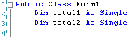

The Code for the VB NET Calculator
In the previous part, you designed the NET form for your calculator. We'll now make a start on the code.
You might be thinking that all this is terribly complicated at such an early stage. But it isn't really. All we are doing is transferring the Text Properties from the Buttons to the textbox. And you already know how to do that. The number buttons don't do anything else. All the work is done with the Plus button and the Equals buttons. And there's only two lines of code needed for the Plus button, and three for the Equals button.
For this to work, though, a little word about Scope in VB NET.
So far, when you've set up a variable, you've set them up behind a Private Subroutine. Like this:
Private Sub Button1_Click(ByVal sender As System.Object,
_
ByVal e As System.EventArgs) _
Handles Button1.Click
Dim MyVariable As String
End Sub
Suppose you had another button on the form, Button2, and the code was this
Private Sub Button2_Click(ByVal sender As System.Object,
_
ByVal e As System.EventArgs) _
Handles Button2.Click
Dim MyOtherVariable As String
End Sub
How can you access what's in MyVariable from Button2? The answer is, you can't. It's like two people sitting at desks in cubicles. Each person has written something on a piece of paper. They can't see into the other person's cubicle, only whatever is their own cubicle. So how do they share their information?
Well suppose there is a screen in front of them. A big screen. They can both see the screen in front of them; it's each other they can't see. What they could do is project their information onto the screen. Then one person could see what the other has written.
Similarly, in VB you can set up your variable declarations outside of the code for a Button. That way, more than one Button can see the code.
You can place your variable declarations right at the top of the code window, just beneath the line that begins "Public Class Form1". We'll set up two Integer variables there, total1 and total2:

Now all the controls on your form can see these two variables. Those Buttons you set up can put something in them, and every button has the ability to see what's inside them.
No more reading these lessons online - get the eBook here!
The 0 to 9 Buttons
The Buttons with the Text 0 to 9 only need to do one thing when the button is clicked - have their Text Properties transferred to the Textbox.
So double click the 0 Button and enter the following code:
Private Sub btnZero_Click(ByVal sender As System.Object,
_
ByVal e As System.EventArgs) _
Handles btnZero.Click
txtDisplay.Text = btnZero.Text
End Sub
This code will transfer the Text Property of a Button called btnZero to the Text Property of a Textbox called txtDisplay.
Run your programme and try it out. When the programme is running, click the 0 button to see that it does indeed transfer the Text on the Button to the textbox
Except, there's a problem with that code. If you wrote similar code for all ten of your number buttons, the calculator wouldn't be right. Why is that? Have you spotted what's wrong? It's a good idea to set this book aside for a while and think about why this code on it's own wouldn't work. In fact you could write code for a few more of the number buttons and test it out.
What happens when you transfer the number 2 to the Textbox, and then click the number 3? The number 2 will disappear, to be replaced by the number 3. Which is all right if all you wanted to do was add up single numbers, but not much good if you actually wanted the number 23 in the Textbox. With this code, you could have either the number 2 in the Textbox or the number 3, but not both!
So how do we solve this problem? How do we fix it so that we can have two or more numbers appearing in our Textbox?
What we need is a way to get whatever is in the Textbox to stay where it is, and not disappear on us when we click a different number. It's quite easy. It's this:
txtDisplay.Text = txtDisplay.Text & btnZero.Text
So now we're saying the textbox doesn't just contain the Text on the Button. It must also keep whatever is inside the textbox as well.
So what you need to do now is to add that code to all of your ten number Buttons. Obviously it won't be exactly the same. For the button called btnOne the code would be this:
txtDisplay.Text = txtDisplay.Text & btnOne.Text
When you've finished coding all ten buttons, run the programme and click all ten number button to see if they do indeed transfer the numbers on the caption to the textbox. Not only that, but test to see if you can have more than one number in the textbox.
Now that we can get numbers into our Textbox display area, we'll write code to do something with those numbers - add them together, in other words. We'll do that in the next part. Click the link below to move on.